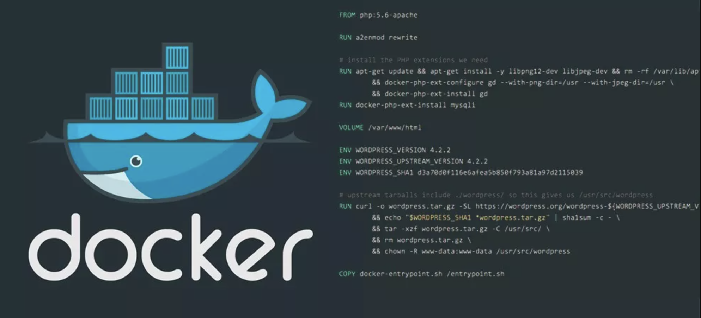
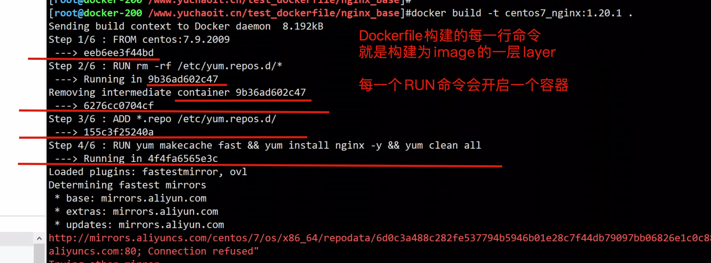
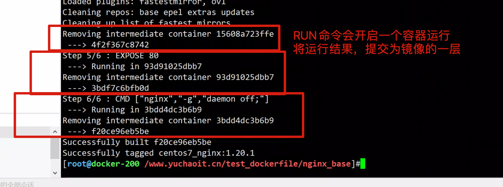
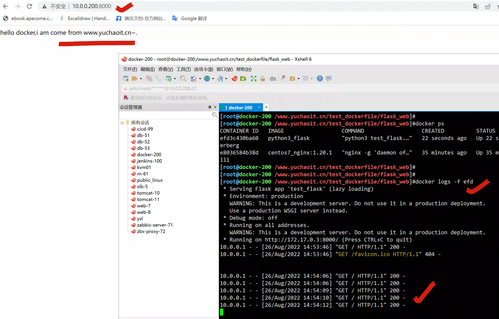
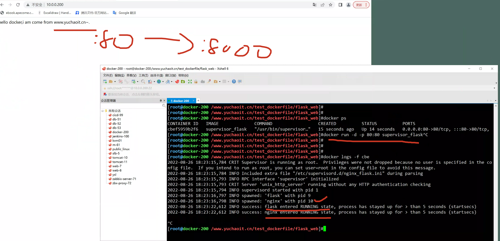
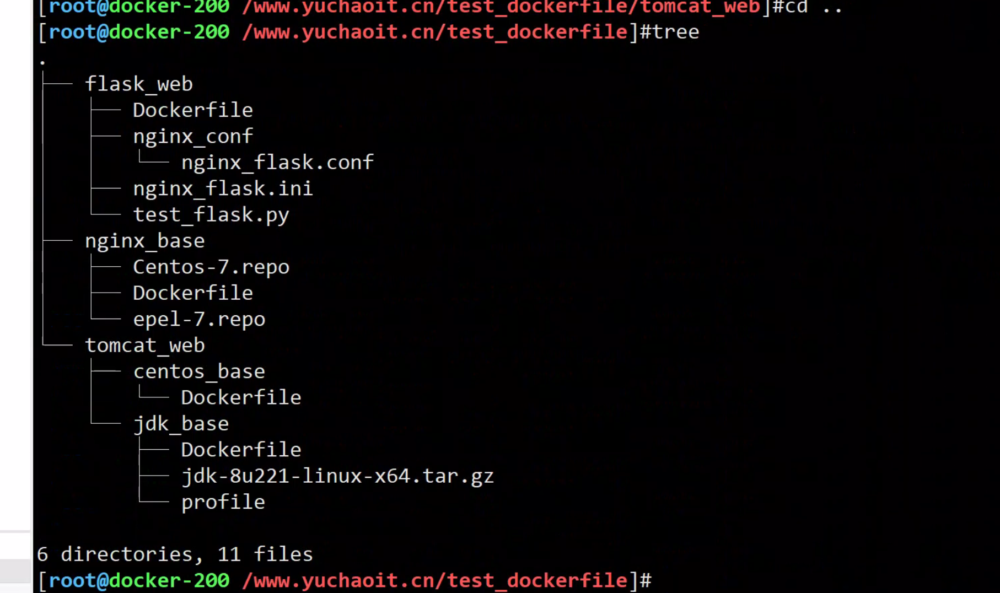
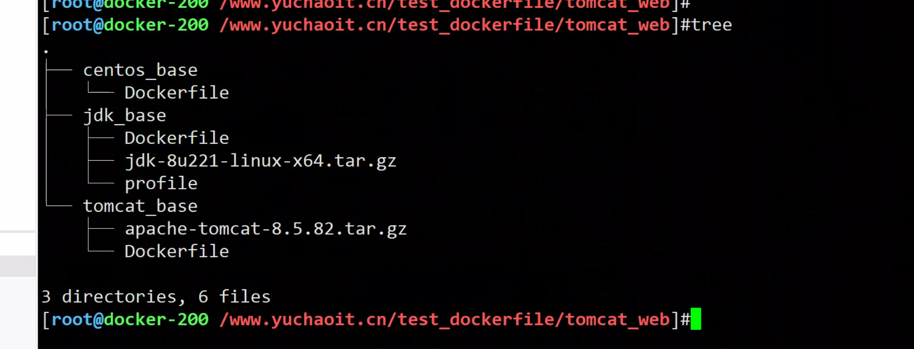
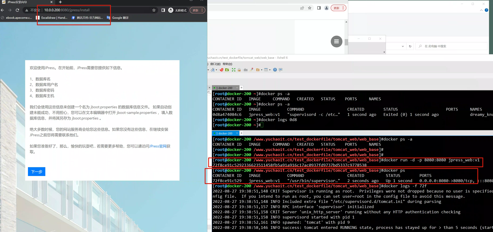

04_dockerfile构建镜像
定制docker镜像的方式有两种：
- 手动修改容器内容，导出新的镜像（前面超哥讲docker save等）
- 基于Dockerfile自行编写指令，基于指令流程创建镜像。
dockerfile简介

镜像是多层存储，每一层在前一层的基础上进行修改；
容器也是多层存储，以镜像为基础层，在其基础上加一层作为容器运行时的存储层。
刚才说了，创建镜像的两个方法
- 手动修改容器内容，然后docker commit提交容器为新的镜像
- 通过在dockerfile中定义一系列的命令和参数构成的脚本，然后这些命令应用于基础镜像，依次添加层，最终生成一个新的镜像。
- 极大的简化了部署工作。
https://github.com/CentOS/CentOS-Dockerfiles
不建议用、问题太多了，参考下语法即可。
为什么要用dockerfile
1. 前面我们的玩法是，先进入容器内容，如centos7，然后手动部署如vim，nginx等环境，用于运行nginx的静态站点等，最后docker commit 保存容器记录为一个新的镜像。
2. 但是这个方式，毕竟太低效，而且没法复用，也不能自动化，操作起来也很复杂。
3. 那有没有一个办法，将你一步一步对容器修改的操作，写成脚本？有，这就是dockerfile。
4. 企业里的容器运维，会将容器部署程序的环境，写成dockerfile来自动化构建镜像。
5.dockerfile是一个可以被docker识别以及执行的自带脚本，且有固定的语法指令。
6.如你以后部署一个ops.yuchaoit.cn 运维平台，可以将部署操作，写成dockerfile，构建镜像，即可运行容器。
7.最终再多个平台交付的也是这个dockerfile脚本了。
8.以及后续的修改，更新部署的逻辑，也只是修改dockerfile而已，非常好用。
1.dockerfile指令说明
细节要求
1.docker会逐行读取dockerfile中每一行的指令，按顺序解析，实现images的自动构建
2.通过docker build命令构建济南高新
3.dockerfile只认识自己规定的指令，不支持自定义
4. 大小写不明感，但是建议指令用纯大写
基础镜像信息 FROM centos:6.8
制作镜像操作指令RUN yum insatll openssh-server -y
容器启动时执行指令 CMD ["/bin/bash"]
dockerfile指令趣谈
FROM 这个镜像的妈妈是谁？（指定基础镜像）
MAINTAINER 告诉别人，谁负责养它？（指定维护者信息，可以没有）
RUN 你想让它干啥（在命令前面加上RUN即可）
ADD 给它点创业资金（COPY文件，会自动解压）
WORKDIR 切换你要执行命令的路径，同cd命令（设置当前工作目录）
VOLUME 给它一个存放行李的地方（设置卷，挂载主机目录）
EXPOSE 它要打开的门是啥（指定对外的端口）
CMD 奔跑吧，兄弟！（指定容器启动后的要干的事情）
dockerfile其他指令：
COPY 复制文件
ENV 环境变量
ENTRYPOINT 容器启动后执行的命令
dockerfile指令详解
FROM
FROM base镜像
必须在dockerfile第一行，表示从哪个基础镜像构建
MAINTAINER
MAINTAINER
可选，填入作者信息，如 MAINTAINER 于超老师
RUN
RUN
每一个RUN指令都是单独开启一个镜像层（镜像优化里需要关注）
可以写入多个RUN，自上而下执行RUN命令
语法一
RUN <cmd> 会被当做 /bin/sh -c "cmd" 执行方式
语法二
RUN ["命令","参数1","参数2"] docker会将其解析为json，因此必须是双引号，且命令必须是绝对路径
RUN原理
RUN后面的命令，每一个RUN本质上就是开启一个容器，执行命令，然后提交执行结果加入为新的一层镜像记录。
前一个RUN的执行结果，仅仅是针对当前进程，在内存中产生的数据变化；
后一个RUN的执行，会产生新的容器，和第一个RUN容器没有任何关系，也不会继承前一层构建产生的内存变化。
如果你要并联执行2个命令，可以用 如 cd /opt && echo "超哥带你学docker www.yuchaoit.cn"
CMD
CMD
- CMD是专门用于容器运行时候的默认命令；
- 当容器运行时，你也可以在命令结尾 主动添加 command，就会覆盖dockerfile构建的镜像中的默认cmd；
- dockerfile里只能写一个CMD，即使写多个，只有最后一个CMD生效；
- CMD定义语法
CMD <cmd> 以/bin/sh -c "cmd"执行
CMD <"executable","args1","args2">
CMD ["arg1","arg2"] 这里要注意，ENTRYPOINT的参数了
参考用法
CMD ["nginx", "-g", "daemon off;"]
EXPOSE
EXPOSE
声明容器暴露端口；
语法：EXPOSE <port1> <port2>
EXPOSE只是声明容器运行时，提供哪个对外的服务端口，并不会自己开启，需要主动用参数映射；
-p <宿主机端口>:<容器端口>
- 作用1是帮助运维理解这个镜像所开启的端口，便于配置映射关系
- 作用2是，使用随机映射的话，也会使用EXPOSE打开的端口
ENTRYPOINT
ENTRYPOINT
- 翻译为入口点，可以理解为，将最终的容器变成一个可执行的文件，
- ENTRYPOINT 的格式和 RUN 指令格式一样，分为 exec 格式和 shell 格式。
- ENTRYPOINT 的目的和 CMD 一样，都是在指定容器启动程序及参数。
- 当指定了 ENTRYPOINT 后，CMD 的含义就发生了改变，不再是直接的运行其命令，而是将 CMD 的内容作为参数传给 ENTRYPOINT 指令
- 换句话说实际执行时，将变为：
<ENTRYPOINT> "<CMD>"
参考场景
让镜像变成像命令一样使用
假设我们需要一个得知自己当前公网 IP 的镜像，那么可以先用 CMD 来实现：
FROM ubuntu:18.04
RUN apt-get update \
&& apt-get install -y curl \
&& rm -rf /var/lib/apt/lists/*
CMD [ "curl", "http://myip.ipip.net" ]
假如我们使用 docker build -t myip . 来构建镜像的话，如果我们需要查询当前公网 IP，只需要执行：
$ docker run myip
当前 IP：125.33.245.18 来自于：中国 北京 北京 联通
嗯，这么看起来好像可以直接把镜像当做命令使用了，不过命令总有参数，如果我们希望加参数呢？比如从上面的 CMD 中可以看到实质的命令是 curl，那么如果我们希望显示 HTTP 头信息，就需要加上 -i 参数。那么我们可以直接加 -i 参数给 docker run myip 么？
$ docker run myip -i
docker: Error response from daemon: invalid header field value "oci runtime error: container_linux.go:247: starting container process caused \"exec: \\\"-i\\\": executable file not found in $PATH\"\n".
我们可以看到可执行文件找不到的报错，executable file not found。之前我们说过，跟在镜像名后面的是 command，运行时会替换 CMD 的默认值。
因此这里的 -i 替换了原来的 CMD，而不是添加在原来的 curl -s http://myip.ipip.net 后面。而 -i 根本不是命令，所以自然找不到。
那么如果我们希望加入 -i 这参数，我们就必须重新完整的输入这个命令：
$ docker run myip curl -s http://myip.ipip.net -i
这显然不是很好的解决方案，而使用 ENTRYPOINT 就可以解决这个问题。现在我们重新用 ENTRYPOINT 来实现这个镜像：
FROM ubuntu:18.04
RUN apt-get update \
&& apt-get install -y curl \
&& rm -rf /var/lib/apt/lists/*
ENTRYPOINT [ "curl", "-s", "http://myip.ipip.net" ]
这次我们再来尝试直接使用 docker run myip -i：
docker run myip
docker run myip -i
可以看到，这次成功了。这是因为当存在 ENTRYPOINT 后，CMD 的内容将会作为参数传给 ENTRYPOINT，而这里 -i 就是新的 CMD，因此会作为参数传给 curl，从而达到了我们预期的效果。
ADD和COPY
1. 如源码编译下这个需求，可以用ADD，COPY将宿主机上的文件，复制到镜像里
2. ADD和COPY的源路径，必须是以dockerfile所在目录的相对路径
3. 原路径也可以是一个网络URL
4. ADD比COPY多一个解压tar的功能。
add详解
ADD 指令和 COPY 的格式和性质基本一致。但是在 COPY 基础上增加了一些功能。
比如 <源路径> 可以是一个 URL，这种情况下，Docker 引擎会试图去下载这个链接的文件放到 <目标路径> 去。
下载后的文件权限自动设置为 600，如果这并不是想要的权限，那么还需要增加额外的一层 RUN 进行权限调整，另外，如果下载的是个压缩包，需要解压缩，也一样还需要额外的一层 RUN 指令进行解压缩。
所以不如直接使用 RUN 指令，然后使用 wget 或者 curl 工具下载，处理权限、解压缩、然后清理无用文件更合理。
因此，这个功能其实并不实用，而且不推荐使用。
如果 <源路径> 为一个 tar 压缩文件的话，压缩格式为 gzip, bzip2 以及 xz 的情况下，ADD 指令将会自动解压缩这个压缩文件到 <目标路径> 去。
在某些情况下，这个自动解压缩的功能非常有用，比如官方镜像 ubuntu 中：
FROM scratch
ADD ubuntu-xenial-core-cloudimg-amd64-root.tar.gz /
...
但在某些情况下，如果我们真的是希望复制个压缩文件进去，而不解压缩，这时就不可以使用 ADD 命令了。
在 Docker 官方的 Dockerfile 最佳实践文档 中要求，尽可能的使用 COPY，因为 COPY 的语义很明确，就是复制文件而已，而 ADD 则包含了更复杂的功能，其行为也不一定很清晰。最适合使用 ADD 的场合，就是所提及的需要自动解压缩的场合。
另外需要注意的是，ADD 指令会令镜像构建缓存失效，从而可能会令镜像构建变得比较缓慢。
因此在 COPY 和 ADD 指令中选择的时候，可以遵循这样的原则，所有的文件复制均使用 COPY 指令，仅在需要自动解压缩的场合使用 ADD。
在使用该指令的时候还可以加上--chown=<user>:<group>选项来改变文件的所属用户及所属组。
ADD --chown=55:mygroup files* /mydir/
ADD --chown=bin files* /mydir/
ADD --chown=1 files* /mydir/
ADD --chown=10:11 files* /mydir/
ENV
格式有两种：
ENV <key> <value>
ENV <key1>=<value1> <key2>=<value2>...
这个指令很简单，就是设置环境变量而已
无论是后面的其它指令，如 RUN，还是运行时的应用，都可以直接使用这里定义的环境变量。
ENV VERSION=1.0 DEBUG=on \
NAME="Happy Feet"
基于该镜像运行容器，自动拥有该环境变量，常用于设置如数据库等配置信息
WORKDIR
格式为 WORKDIR <工作目录路径>。
使用 WORKDIR 指令可以来指定工作目录（或者称为当前目录），以后各层的当前目录就被改为指定的目录，如该目录不存在，WORKDIR 会帮你建立目录。
之前提到一些初学者常犯的错误是把 Dockerfile 等同于 Shell 脚本来书写，这种错误的理解还可能会导致出现下面这样的错误：
RUN cd /app
RUN echo "hello" > world.txt
如果将这个 Dockerfile 进行构建镜像运行后，会发现找不到 /app/world.txt 文件，或者其内容不是 hello。
原因其实很简单，在 Shell 中，连续两行是同一个进程执行环境，因此前一个命令修改的内存状态，会直接影响后一个命令；而在 Dockerfile 中，这两行 RUN 命令的执行环境根本不同，是两个完全不同的容器。这就是对 Dockerfile 构建分层存储的概念不了解所导致的错误。
之前说过每一个 RUN 都是启动一个容器、执行命令、然后提交存储层文件变更。第一层 RUN cd /app 的执行仅仅是当前进程的工作目录变更，一个内存上的变化而已，其结果不会造成任何文件变更。
而到第二层的时候，启动的是一个全新的容器，跟第一层的容器更完全没关系，自然不可能继承前一层构建过程中的内存变化。
因此如果需要改变以后各层的工作目录的位置，那么应该使用 WORKDIR 指令。
WORKDIR /app
RUN echo "hello" > world.txt
如果你的 WORKDIR 指令使用的相对路径，那么所切换的路径与之前的 WORKDIR 有关：
WORKDIR /a
WORKDIR b
WORKDIR c
RUN pwd
RUN pwd 的工作目录为 /a/b/c。
USER
格式：USER <用户名>[:<用户组>]
USER 指令和 WORKDIR 相似，都是改变环境状态并影响以后的层。WORKDIR 是改变工作目录，USER 则是改变之后层的执行 RUN, CMD 以及 ENTRYPOINT 这类命令的身份。
注意，USER 只是帮助你切换到指定用户而已，这个用户必须是事先建立好的，否则无法切换。
RUN groupadd -r redis && useradd -r -g redis redis
USER redis
RUN [ "redis-server" ]
如果以 root 执行的脚本，在执行期间希望改变身份，比如希望以某个已经建立好的用户来运行某个服务进程，不要使用 su 或者 sudo，这些都需要比较麻烦的配置，而且在 TTY 缺失的环境下经常出错。
# 建立 redis 用户，并使用 gosu 换另一个用户执行命令
RUN groupadd -r redis && useradd -r -g redis redis
# 下载 gosu
RUN wget -O /usr/local/bin/gosu "https://github.com/tianon/gosu/releases/download/1.12/gosu-amd64" \
&& chmod +x /usr/local/bin/gosu \
&& gosu nobody true
# 设置 CMD，并以另外的用户执行
CMD [ "exec", "gosu", "redis", "redis-server" ]
VOLUME
用来创建一个在镜像以外的挂载点，用于在多个容器之间共享数据
格式为：
VOLUME ["<路径1>", "<路径2>"...]
VOLUME <路径>
之前我们说过，容器运行时应该尽量保持容器存储层不发生写操作，对于数据库类需要保存动态数据的应用，其数据库文件应该保存于卷(volume)中，后面的章节我们会进一步介绍 Docker 卷的概念。
为了防止运行时用户忘记将动态文件所保存目录挂载为卷（忘记用-v参数），在 Dockerfile 中，我们可以事先指定某些目录挂载为匿名卷，这样在运行时如果用户不指定挂载，其应用也可以正常运行，不会向容器存储层写入大量数据。
VOLUME /data
这里的 /data 目录就会在容器运行时自动挂载为匿名卷，任何向 /data 中写入的信息都不会记录进容器存储层，从而保证了容器存储层的无状态化。
当然，运行容器时可以覆盖这个挂载设置。比如：
$ docker run -d -v mydata:/data xxxx
在这行命令中，就使用了 mydata 这个命名卷挂载到了 /data 这个位置，替代了 Dockerfile 中定义的匿名卷的挂载配置。
2.dockerfile小试身手
构建思路
新手写dockerfile的思路
1. 先想好需求，手工进入容器，正常执行安装步骤，确保运行正常
2.将你部署的命令，以及涉及的配置文件，整理为笔记
3.将配置文件放到一个xx文件夹
4.改写dockerfile
5.测试构建镜像
2.1 自定义centos7.9.2009 + nginx
1.创建目录
[root@docker-200 ~]#mkdir /www.yuchaoit.cn/test_dockerfile/nginx_base/
2.准备配置文件，如yum文件
cd /www.yuchaoit.cn/test_dockerfile/nginx_base/
curl -o ./Centos-7.repo http://mirrors.aliyun.com/repo/Centos-7.repo
curl -o ./epel-7.repo http://mirrors.aliyun.com/repo/epel-7.repo
[root@docker-200 /www.yuchaoit.cn/test_dockerfile/nginx_base]#ls
Centos-7.repo Dockerfile epel-7.repo
3.写Dockerfile，必须是大写开头的名字，以及看好位置
cat > Dockerfile <<'EOF'
FROM centos:7.9.2009
RUN rm -rf /etc/yum.repos.d/*
ADD *.repo /etc/yum.repos.d/
RUN yum makecache fast \
&& yum install nginx -y \
&& yum clean all
EXPOSE 80
CMD ["nginx","-g","daemon off;"]
EOF
# 提示，RUN的写法，是为了降低镜像体积，删除缓存
4.最终目录结果
[root@docker-200 /www.yuchaoit.cn/test_dockerfile/nginx_base]#ls
Centos-7.repo Dockerfile epel-7.repo
5.构建镜像
[root@docker-200 /www.yuchaoit.cn/test_dockerfile/nginx_base]#docker build -t centos7_nginx:1.20.1 .
构建结果

最终的build构建镜像结果

运行自定义镜像
[root@docker-200 /www.yuchaoit.cn/test_dockerfile/nginx_base]#docker images centos7_nginx
REPOSITORY TAG IMAGE ID CREATED SIZE
centos7_nginx 1.20.1 f20ce96eb5be About a minute ago 262MB
[root@docker-200 /www.yuchaoit.cn/test_dockerfile/nginx_base]#docker run -d -p 10.0.0.200:80:80 centos7_nginx:1.20.1
e8036584b38dc2189c983eff5f90089e7657412b552693fc1a4883bc645fd81f
[root@docker-200 /www.yuchaoit.cn/test_dockerfile/nginx_base]#
[root@docker-200 /www.yuchaoit.cn/test_dockerfile/nginx_base]#docker ps
CONTAINER ID IMAGE COMMAND CREATED STATUS PORTS NAMES
e8036584b38d centos7_nginx:1.20.1 "nginx -g 'daemon of…" 7 seconds ago Up 5 seconds 10.0.0.200:80->80/tcp great_antonelli
[root@docker-200 /www.yuchaoit.cn/test_dockerfile/nginx_base]#docker port great_antonelli
80/tcp -> 10.0.0.200:80
访问容器
访问宿主机即可
[root@docker-200 /www.yuchaoit.cn/test_dockerfile/nginx_base]#curl 10.0.0.200 -I
HTTP/1.1 200 OK
Server: nginx/1.20.1
Date: Fri, 26 Aug 2022 14:22:40 GMT
Content-Type: text/html
Content-Length: 16
Last-Modified: Fri, 26 Aug 2022 14:22:06 GMT
Connection: keep-alive
ETag: "6308d70e-10"
Accept-Ranges: bytes
2.2 构建python3应用镜像
1.准备好代码文件
[root@docker-200 /www.yuchaoit.cn/test_dockerfile]#mkdir flask_web
[root@docker-200 /www.yuchaoit.cn/test_dockerfile]#cd flask_web/
cat > test_flask.py <<'EOF'
#coding:utf8
from flask import Flask
app=Flask(__name__)
@app.route('/')
def hello():
return "hello docker,i am come from www.yuchaoit.cn~."
if __name__=="__main__":
app.run(host='0.0.0.0',port=8000)
EOF
2.编写Dockerfile
cat > Dockerfile <<'EOF'
FROM centos:7.6.1810
RUN curl -o /etc/yum.repos.d/CentOS-Base.repo https://mirrors.aliyun.com/repo/Centos-7.repo;
RUN curl -o /etc/yum.repos.d/epel.repo http://mirrors.aliyun.com/repo/epel-7.repo;
RUN yum makecache fast \
&& yum install python3 python3-devel python3-pip -y \
&& python3 -m pip install -i https://mirrors.aliyun.com/pypi/simple --upgrade pip \
&& pip3 install -i https://mirrors.aliyun.com/pypi/simple flask
COPY test_flask.py /opt
WORKDIR /opt
EXPOSE 8000
CMD ["python3","test_flask.py"]
EOF
3. 构建镜像
# 最终目录结果
[root@docker-200 /www.yuchaoit.cn/test_dockerfile/flask_web]#ls
Dockerfile test_flask.py
# 构建
docker build -t 'python3_flask' .
4.运行容器访问
[root@docker-200 /www.yuchaoit.cn/test_dockerfile/flask_web]#
[root@docker-200 /www.yuchaoit.cn/test_dockerfile/flask_web]#docker run -d -p 8000:8000 python3_flask
efd3c430ba60a6d166510c4f1268733849cf4e54bc2a9075204490312519e3f0
[root@docker-200 /www.yuchaoit.cn/test_dockerfile/flask_web]#docker ps
CONTAINER ID IMAGE COMMAND CREATED STATUS PORTS NAMES
efd3c430ba60 python3_flask "python3 test_flask.…" 1 second ago Up 1 second 0.0.0.0:8000->8000/tcp, :::8000->8000/tcp youthful_lederberg
e8036584b38d centos7_nginx:1.20.1 "nginx -g 'daemon of…" 35 minutes ago Up 35 minutes 10.0.0.200:80->80/tcp great_antonelli
[root@docker-200 /www.yuchaoit.cn/test_dockerfile/flask_web]#

3.Dockerfile分段构建优化（面试背）
1.避免安装非必要软件，减少镜像体积
如wget vim net-tools 非必要就不装
2.安装软件后清理缓存，如yum clean all
3.一个容器就跑一个应用，建议一个容器就跑一个进程
但也分场景如可以部署一个nginx+php的容器，另一个mysql单独的容器
4.最小化降低镜像层数
从上述构建过程，可见每一个RUN，COPY等都会创建指令层，尽可能得合并多个RUN即可，使用多行拼接符号 \
5.使用supervisor管理多个进程
使用supervisor改造nginx+flask容器
1.准备nginx配置目录
cat > nginx_flask.conf <<'EOF'
server{
listen 80;
server_name _;
location / {
proxy_pass http://127.0.0.1:8000;
}
}
EOF
配置目录
[root@docker-200 /www.yuchaoit.cn/test_dockerfile/flask_web/nginx_conf]#ll
total 4
-rw-r--r-- 1 root root 77 Aug 27 01:57 nginx_flask.conf
1.编写supervisor配置文件
cat > nginx_flask.ini <<'EOF'
[program:nginx]
command=nginx -g 'daemon off;'
autostart=true
autorestart=true
startsecs=5
redirect_stderr=true
stdout_logfile_maxbytes=20MB
stdout_logfile_backups=20
stdout_logfile=/var/log/supervisor/nginx.log
[program:flask]
command=python3 /opt/test_flask.py
autostart=true
autorestart=true
startsecs=5
redirect_stderr=true
stdout_logfile_maxbytes=20MB
stdout_logfile_backups=20
stdout_logfile=/var/log/supervisor/flask.log
EOF
具体文件
[root@docker-200 /www.yuchaoit.cn/test_dockerfile/flask_web]#tree
.
├── Dockerfile
├── nginx_conf
│ └── nginx_flask.conf
├── nginx_flask.ini
└── test_flask.py
1 directory, 4 files
# 更新dockerfile
cat > Dockerfile <<'EOF'
FROM centos:7.6.1810
RUN curl -o /etc/yum.repos.d/CentOS-Base.repo https://mirrors.aliyun.com/repo/Centos-7.repo;
RUN curl -o /etc/yum.repos.d/epel.repo http://mirrors.aliyun.com/repo/epel-7.repo;
RUN yum makecache fast \
&& yum install python3 python3-devel python3-pip -y \
&& python3 -m pip install -i https://mirrors.aliyun.com/pypi/simple --upgrade pip \
&& pip3 install -i https://mirrors.aliyun.com/pypi/simple flask \
&& yum install supervisor nginx -y
COPY nginx_flask.ini /etc/supervisord.d/
COPY nginx_conf/nginx_flask.conf /etc/nginx/conf.d/
RUN sed -i 's/nodaemon=false/nodaemon=true/g' /etc/supervisord.conf
COPY test_flask.py /opt
WORKDIR /opt
EXPOSE 8000
EXPOSE 80
CMD ["/usr/bin/supervisord","-c","/etc/supervisord.conf"]
EOF
启动容器
[root@docker-200 /www.yuchaoit.cn/test_dockerfile/flask_web]#
[root@docker-200 /www.yuchaoit.cn/test_dockerfile/flask_web]#docker ps
CONTAINER ID IMAGE COMMAND CREATED STATUS PORTS NAMES
cbef5959b2f6 supervisor_flask "/usr/bin/supervisor…" 15 seconds ago Up 14 seconds 0.0.0.0:80->80/tcp, :::80->80/tcp, 8000/tcp nervous_williamson
[root@docker-200 /www.yuchaoit.cn/test_dockerfile/flask_web]#docker run -d -p 80:80 supervisor_flask
查看访问
[root@docker-200 /www.yuchaoit.cn/test_dockerfile/flask_web]#curl 10.0.0.200:80
hello docker,i am come from www.yuchaoit.cn~

4.Dockerfile优化(官网翻译)
官网文档
https://docs.docker.com/develop/develop-images/dockerfile_best-practices/
编写 Dockerfile 的最佳实践
容器应该是短暂的
通过 Dockerfile 构建的镜像所启动的容器应该尽可能短暂（生命周期短）。「短暂」意味着可以停止和销毁容器，并且创建一个新容器并部署好所需的设置和配置工作量应该是极小的。
使用 .dockerignore 文件
使用 Dockerfile 构建镜像时最好是将 Dockerfile 放置在一个新建的空目录下。然后将构建镜像所需要的文件添加到该目录中。为了提高构建镜像的效率，你可以在目录下新建一个 .dockerignore 文件来指定要忽略的文件和目录。.dockerignore 文件的排除模式语法和 Git 的 .gitignore 文件相似。
使用多阶段构建
在 Docker 17.05 以上版本中，你可以使用 多阶段构建来减少所构建镜像的大小。
避免安装不必要的包
为了降低复杂性、减少依赖、减小文件大小、节约构建时间，你应该避免安装任何不必要的包。例如，不要在数据库镜像中包含一个文本编辑器。
一个容器只运行一个进程
应该保证在一个容器中只运行一个进程。将多个应用解耦到不同容器中，保证了容器的横向扩展和复用。例如 web 应用应该包含三个容器：web应用、数据库、缓存。
如果容器互相依赖，你可以使用Docker 自定义网络来把这些容器连接起来。
镜像层数尽可能少
你需要在 Dockerfile 可读性（也包括长期的可维护性）和减少层数之间做一个平衡。
将多行参数排序
将多行参数按字母顺序排序（比如要安装多个包时）。这可以帮助你避免重复包含同一个包，更新包列表时也更容易。也便于 PRs 阅读和审查。建议在反斜杠符号 \ 之前添加一个空格，以增加可读性。
下面是来自 buildpack-deps 镜像的例子：
RUN apt-get update && apt-get install -y \
bzr \
cvs \
git \
mercurial \
subversion
构建缓存
在镜像的构建过程中，Docker 会遍历 Dockerfile 文件中的指令，然后按顺序执行。在执行每条指令之前，Docker 都会在缓存中查找是否已经存在可重用的镜像，如果有就使用现存的镜像，不再重复创建。如果你不想在构建过程中使用缓存，你可以在 docker build 命令中使用 --no-cache=true 选项。
但是，如果你想在构建的过程中使用缓存，你得明白什么时候会，什么时候不会找到匹配的镜像，遵循的基本规则如下：
- 从一个基础镜像开始（
FROM指令指定），下一条指令将和该基础镜像的所有子镜像进行匹配，检查这些子镜像被创建时使用的指令是否和被检查的指令完全一样。如果不是，则缓存失效。 - 在大多数情况下，只需要简单地对比
Dockerfile中的指令和子镜像。然而，有些指令需要更多的检查和解释。 - 对于
ADD和COPY指令，镜像中对应文件的内容也会被检查，每个文件都会计算出一个校验和。文件的最后修改时间和最后访问时间不会纳入校验。在缓存的查找过程中，会将这些校验和和已存在镜像中的文件校验和进行对比。如果文件有任何改变，比如内容和元数据，则缓存失效。 - 除了
ADD和COPY指令，缓存匹配过程不会查看临时容器中的文件来决定缓存是否匹配。例如，当执行完RUN apt-get -y update指令后，容器中一些文件被更新，但 Docker 不会检查这些文件。这种情况下，只有指令字符串本身被用来匹配缓存。
一旦缓存失效，所有后续的 Dockerfile 指令都将产生新的镜像，缓存不会被使用。
Dockerfile 指令的优化
下面针对 Dockerfile 中各种指令的最佳编写方式给出建议。
FROM
尽可能使用当前官方仓库作为你构建镜像的基础。推荐使用 Alpine 镜像，因为它被严格控制并保持最小尺寸（目前小于 5 MB），但它仍然是一个完整的发行版。
RUN
为了保持 Dockerfile 文件的可读性，可理解性，以及可维护性，建议将长的或复杂的 RUN 指令用反斜杠 \ 分割成多行。
EXPOSE
EXPOSE 指令用于指定容器将要监听的端口。因此，你应该为你的应用程序使用常见的端口。例如，提供 Apache web 服务的镜像应该使用 EXPOSE 80，而提供 MongoDB 服务的镜像使用 EXPOSE 27017。
对于外部访问，用户可以在执行 docker run 时使用一个标志来指示如何将指定的端口映射到所选择的端口。
ENV
为了方便新程序运行，你可以使用 ENV 来为容器中安装的程序更新 PATH 环境变量。例如使用 ENV PATH /usr/local/nginx/bin:$PATH 来确保 CMD ["nginx"] 能正确运行。
ENV 指令也可用于为你想要容器化的服务提供必要的环境变量，比如 Postgres 需要的 PGDATA。
最后，ENV 也能用于设置常见的版本号，比如下面的示例：
ADD 和 COPY
虽然 ADD 和 COPY 功能类似，但一般优先使用 COPY。因为它比 ADD 更透明。COPY 只支持简单将本地文件拷贝到容器中，而 ADD 有一些并不明显的功能（比如本地 tar 提取和远程 URL 支持）。
因此，ADD 的最佳用例是将本地 tar 文件自动提取到镜像中，例如 ADD rootfs.tar.xz。
如果你的 Dockerfile 有多个步骤需要使用上下文中不同的文件。
单独 COPY 每个文件，而不是一次性的 COPY 所有文件，这将保证每个步骤的构建缓存只在特定的文件变化时失效。例如：
ENTRYPOINT
ENTRYPOINT 的最佳用处是设置镜像的主命令，允许将镜像当成命令本身来运行（用 CMD 提供默认选项）。
VOLUME
VOLUME 指令用于暴露任何数据库存储文件，配置文件，或容器创建的文件和目录。强烈建议使用 VOLUME 来管理镜像中的可变部分和用户可以改变的部分。
建议参考官网写法
https://github.com/docker-library/docs
5.构建tomcat镜像
5.1 构建基础镜像centos7
1.做好基础优化，网络工具包，yum源，时间同步
FROM centos:7.6.1810
RUN rm -f /etc/yum.repos.d/*
RUN curl -o /etc/yum.repos.d/CentOS-Base.repo https://mirrors.aliyun.com/repo/Centos-7.repo;
RUN curl -o /etc/yum.repos.d/epel.repo http://mirrors.aliyun.com/repo/epel-7.repo;
RUN yum install net-tools bash-completion supervisor -y \
&& yum clean all \
&& rm -rf /etc/localtime \
&& ln -s /usr/share/zoneinfo/Asia/Shanghai /etc/localtime \
&& groupadd -g 1000 www \
&& useradd -u 1000 -g 1000 www -M -s /sbin/nologin
2.构建基础镜像
[root@docker-200 /www.yuchaoit.cn/test_dockerfile/tomcat_web/centos_base]#ll
total 4
-rw-r--r-- 1 root root 468 Aug 27 02:52 Dockerfile
docker build -t centos7_base:7.6.1810 .
5.2 构建jdk基础镜像
1. 创建目录
[root@docker-200 /www.yuchaoit.cn/test_dockerfile/tomcat_web]#mkdir jdk_base
[root@docker-200 /www.yuchaoit.cn/test_dockerfile/tomcat_web]#cd jdk_base/
[root@docker-200 /www.yuchaoit.cn/test_dockerfile/tomcat_web/jdk_base]#
2.创建配置文件
# tail -5 profile
export JAVA_HOME=/opt/jdk
export TOMCAT_HOME=/opt/tomcat
export PATH=$JAVA_HOME/bin:$JAVA_HOME/jre/bin:$TOMCAT_HOME/bin:$PATH
export CLASSPATH=.$CLASSPATH:$JAVA_HOME/bin:$JAVA_HOME/jre/lib:$JAVA_HOME/lib/tools.jar
3.准备好jdk文件
[root@docker-200 /www.yuchaoit.cn/test_dockerfile/tomcat_web/jdk_base]#ll
total 166040
-rw-r--r-- 1 root root 170023183 Jul 14 12:01 jdk-8u181-linux-x64.rpm
4.写Dockerfile，以超哥刚才自建centos镜像为基础了
[root@docker-200 /www.yuchaoit.cn/test_dockerfile/tomcat_web/jdk_base]#cat Dockerfile
FROM centos7_base:7.6.1810
ADD jdk-8u221-linux-x64.tar.gz /opt
ADD profile /etc/profile
RUN ln -s /opt/jdk1.8.0_221 /opt/jdk
ENV JAVA_HOME /opt/jdk
ENV JRE_HOME $JAVA_HOME/jre
ENV CLASSPATH $JAVA_HOME/lib:$JRE_HOME/lib
ENV PATH $PATH:$JAVA_HOME/bin
5.构建镜像
docker build -t centos7_jdk:8u60 .
6.启动jdk容器测试，确保和如下于超老师的命令结果一样，才是正确配置好了jdk环境变量
[root@docker-200 /www.yuchaoit.cn/test_dockerfile/tomcat_web/jdk_base]#docker run -it --rm centos7_jdk:8u60 java -version
java version "1.8.0_221"
Java(TM) SE Runtime Environment (build 1.8.0_221-b11)
Java HotSpot(TM) 64-Bit Server VM (build 25.221-b11, mixed mode)
7.最终目录

5.3 构建tomcat镜像
1.构建tomcat配置目录
[root@docker-200 /www.yuchaoit.cn/test_dockerfile/tomcat_web/tomcat_base]#wget https://mirrors.tuna.tsinghua.edu.cn/apache/tomcat/tomcat-8/v8.5.82/bin/apache-tomcat-8.5.82.tar.gz
2.开发Dockerfile，多阶段镜像构建
cat > Dockerfile <<'EOF'
FROM centos7_jdk:8u60
ADD apache-tomcat-8.5.82.tar.gz /opt
RUN ln -s /opt/apache-tomcat-8.5.82 /opt/tomcat
EOF
3.编写Dockerfile
[root@docker-200 /www.yuchaoit.cn/test_dockerfile/tomcat_web/tomcat_base]#docker build -t tomcat_base:8.5.82 .
Sending build context to Docker daemon 10.61MB
Step 1/3 : FROM centos7_jdk:8u60
---> 865113357cbd
Step 2/3 : ADD apache-tomcat-8.5.82.tar.gz /opt
---> Using cache
---> 81c013d5722c
Step 3/3 : RUN ln -s /opt/apache-tomcat-8.5.82.tar.gz /opt/tomcat
---> Using cache
---> 593934bdcb25
Successfully built 593934bdcb25
Successfully tagged tomcat_base:8.5.82
4.测试容器运行，tomcat结果
[root@docker-200 /www.yuchaoit.cn/test_dockerfile/tomcat_web/tomcat_base]#
[root@docker-200 /www.yuchaoit.cn/test_dockerfile/tomcat_web/tomcat_base]#docker run -it --rm tomcat_base:8.5.82 bash
[root@9a14249e435b /]# /opt/tomcat/bin/version.sh
Using CATALINA_BASE: /opt/tomcat
Using CATALINA_HOME: /opt/tomcat
Using CATALINA_TMPDIR: /opt/tomcat/temp
Using JRE_HOME: /opt/jdk/jre
Using CLASSPATH: /opt/tomcat/bin/bootstrap.jar:/opt/tomcat/bin/tomcat-juli.jar
Using CATALINA_OPTS:
Server version: Apache Tomcat/8.5.82
Server built: Aug 8 2022 21:26:07 UTC
Server number: 8.5.82.0
OS Name: Linux
OS Version: 3.10.0-862.el7.x86_64
Architecture: amd64
JVM Version: 1.8.0_221-b11
JVM Vendor: Oracle Corporation
[root@9a14249e435b /]#
[root@9a14249e435b /]#
[root@9a14249e435b /]# /opt/tomcat/bin/catalina.sh start
Using CATALINA_BASE: /opt/tomcat
Using CATALINA_HOME: /opt/tomcat
Using CATALINA_TMPDIR: /opt/tomcat/temp
Using JRE_HOME: /opt/jdk/jre
Using CLASSPATH: /opt/tomcat/bin/bootstrap.jar:/opt/tomcat/bin/tomcat-juli.jar
Using CATALINA_OPTS:
Tomcat started.
[root@9a14249e435b /]# netstat -tunlp
Active Internet connections (only servers)
Proto Recv-Q Send-Q Local Address Foreign Address State PID/Program name
tcp 0 0 127.0.0.1:8005 0.0.0.0:* LISTEN 47/java
tcp 0 0 0.0.0.0:8080 0.0.0.0:* LISTEN 47/java
[root@9a14249e435b /]#

5.4 构建业务镜像
1. 创建数据目录，上传
[root@docker-200 /www.yuchaoit.cn/test_dockerfile/tomcat_web/web_base]#ll
total 67640
-rw-r--r-- 1 root root 69261961 Aug 27 19:08 jpress.war
2. 写supervisor配置文件
cat > tomcat.ini << 'EOF'
[program:tomcat]
command=/opt/tomcat/bin/catalina.sh run
autostart=true
autorestart=true
startsecs=5
redirect_stderr=true
stdout_logfile_maxbytes=20MB
stdout_logfile_backups=20
stdout_logfile=/var/log/supervisor/tomcat.log
EOF
3. 构建dockerfile
# （这里备注个火坑，前面说过了，docker内的进程，必须是前台运行，不得事守护进程，得修改supervisor配置 nodaemon=true ）
FROM tomcat_base:8.5.82
ADD jpress.war /opt/tomcat/webapps/
ADD tomcat.ini /etc/supervisord.d/
RUN sed -i 's/nodaemon=false/nodaemon=true/g' /etc/supervisord.conf
EXPOSE 8080
CMD ["/usr/bin/supervisord","-c","/etc/supervisord.conf"]
4.构建镜像
[root@docker-200 /www.yuchaoit.cn/test_dockerfile/tomcat_web/web_base]#docker build -t jpress_web:v1 .
Sending build context to Docker daemon 69.27MB
Step 1/5 : FROM tomcat_base:8.5.82
---> e37a6d2b0752
Step 2/5 : ADD jpress.war /opt/tomcat/webapps/
---> 7034ce48ecde
Step 3/5 : ADD tomcat.ini /etc/supervisord.d/
---> 5bd16723e6e8
Step 4/5 : EXPOSE 8080
---> Running in ca36c103ca2d
Removing intermediate container ca36c103ca2d
---> 0051b9c33329
Step 5/5 : CMD ["/usr/bin/supervisord","-c","/etc/supervisord.conf"]
---> Running in 639351d9ec17
Removing intermediate container 639351d9ec17
---> 715d36ac3af1
Successfully built 715d36ac3af1
Successfully tagged jpress_web:v1
[root@docker-200 /www.yuchaoit.cn/test_dockerfile/tomcat_web/web_base]#
5.运行测试
[root@docker-200 /www.yuchaoit.cn/test_dockerfile/tomcat_web/web_base]#docker run -d -p 8080:8080 jpress_web:v1
72f8ce91c5292336623511458fb5a91a916c17ac0937fd9737bd5337c9778538
[root@docker-200 /www.yuchaoit.cn/test_dockerfile/tomcat_web/web_base]#docker ps
CONTAINER ID IMAGE COMMAND CREATED STATUS PORTS NAMES
72f8ce91c529 jpress_web:v1 "/usr/bin/supervisor…" 2 seconds ago Up 1 second 0.0.0.0:8080->8080/tcp, :::8080->8080/tcp loving_shannon
[root@docker-200 /www.yuchaoit.cn/test_dockerfile/tomcat_web/web_base]#

至此确保你多阶段构建的tomcat已经可以用了，还差一个数据库。
思考
- 数据库装在那？
- 如何让业务容器，连接数据库容器？